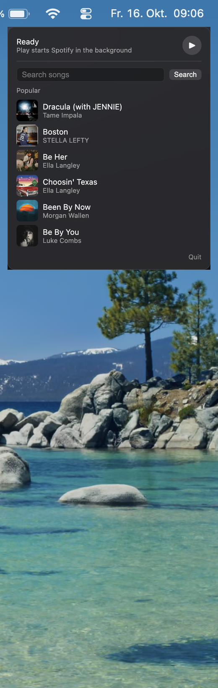
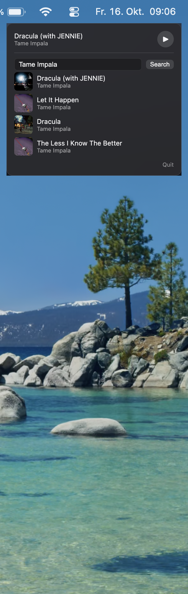

In the MusicBar repo: ./scripts/package-app.sh, then open dist/SpotifyBar.app.
Minigames · Mac app
A menu bar extra next to Wi-Fi. You type a song, pick a result, and Spotify plays it in the background. No Premium, no Spotify login, no Developer account. Source is also on GitHub as MusicBar.
Open the note icon in the menu bar. The popover looks like a small Control Center card: now playing, play/pause, a search field, then a Popular list. That list is Deezer’s current chart, not a Spotify playlist, because Spotify’s Web API is locked for Free accounts.

Type a title or artist and press Search. Results stay in the popover. Click one and Spotify starts that track. If Spotify was quit, it launches hidden so you don’t get a window strobing in front of you. Play/pause always talks to the Spotify Mac app, not Apple Music.

Search goes to Deezer first, then Apple’s iTunes search if Deezer is empty. That gives title, artist, cover, and often an ISRC. None of that is Spotify’s API.
Playback needs spotify:track:…. The app races two
lookups: MusicBrainz (ISRC → Spotify url-rel) and a web search
on open.spotify.com. The first real track ID wins. It never
opens spotify:search:, which used to flash Spotify’s
window.
AppleScript tell application id "com.spotify.client"
plays the URI, reads now playing, and toggles pause. Covers for
the current track come from Spotify’s public oembed endpoint.
If Spotify isn’t running: open -b com.spotify.client -j -g.
Play on the headphones only starts Spotify when nothing else is using the speakers. If a browser or another player is already making sound, the headset button is left alone.
First version was a Swift MenuBarExtra that logged into Spotify with PKCE. Search came back 403 on a Free account, so the Web API went out. The Mac app still accepts AppleScript, so that became the player.
Catalog search, URI resolve, and artwork were the slow part: wrong covers, unplayable rows, Music.app opening instead of Spotify, a search URI that strobed the Spotify window. The path that stuck is Deezer/iTunes for the list, MusicBrainz plus a web search for the URI, URLSession for covers, and bundle-id AppleScript for play.
It’s a Swift package. scripts/package-app.sh builds a
signed .app (ad-hoc, codesign in /tmp so
resource forks don’t break the signature). The bundle id is
com.justus.spotifybar. macOS asks for Spotify and
System Events; Accessibility is optional for the headset path.
In the MusicBar repo: ./scripts/package-app.sh, then open dist/SpotifyBar.app.
Click the note in the menu bar. Search, click a row, or use play/pause. Quit is the tiny link at the bottom.
Optional: System Settings → General → Login Items, add SpotifyBar so the icon is there after restart.
Audio still comes from Spotify. This is a remote for the installed Mac app, not a streaming client of its own.